Figure fig_ch06_p107_01 (Page 107)
Figure fig_ch06_p107_01 (Page 107)
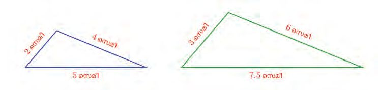
Figure fig_ch06_p107_02 (Page 107)
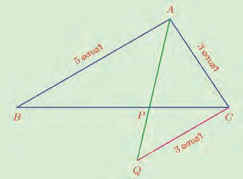
Figure fig_ch06_p107_03 (Page 107)
 Figure fig_ch06_p108_01 (Page 108)
Figure fig_ch06_p108_01 (Page 108)
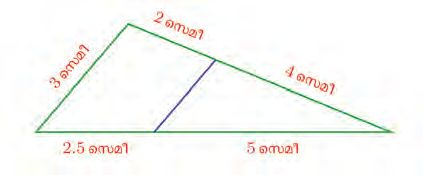
Figure fig_ch06_p108_02 (Page 108)
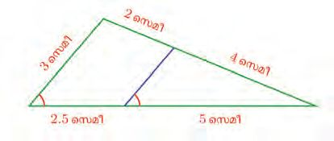
Figure fig_ch06_p108_03 (Page 108)
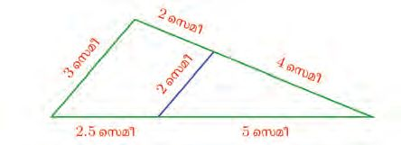
Figure fig_ch06_p108_04 (Page 108)
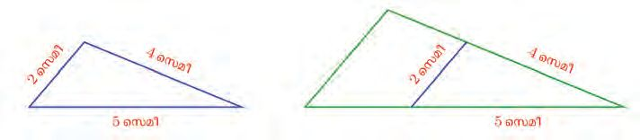
Figure fig_ch06_p108_05 (Page 108)
 Figure fig_ch06_p109_01 (Page 109)
Figure fig_ch06_p109_01 (Page 109)
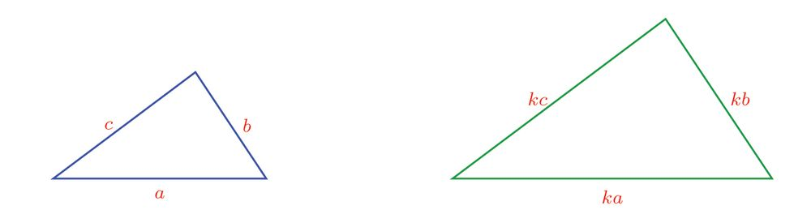
Figure fig_ch06_p109_02 (Page 109)
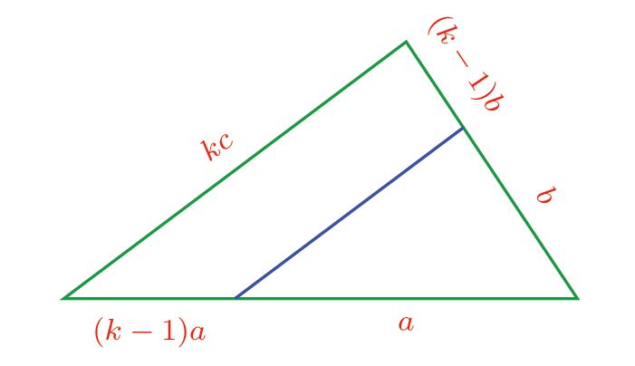
Figure fig_ch06_p109_03 (Page 109)
 Figure fig_ch06_p110_01 (Page 110)
Figure fig_ch06_p110_01 (Page 110)
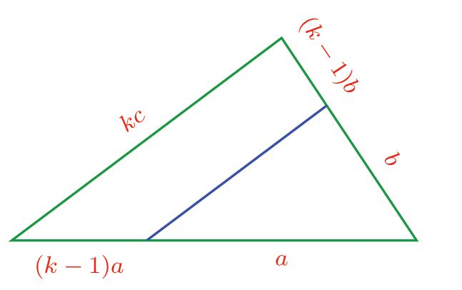
Figure fig_ch06_p110_02 (Page 110)
 Figure fig_ch06_p110_03 (Page 110)
Figure fig_ch06_p110_03 (Page 110)
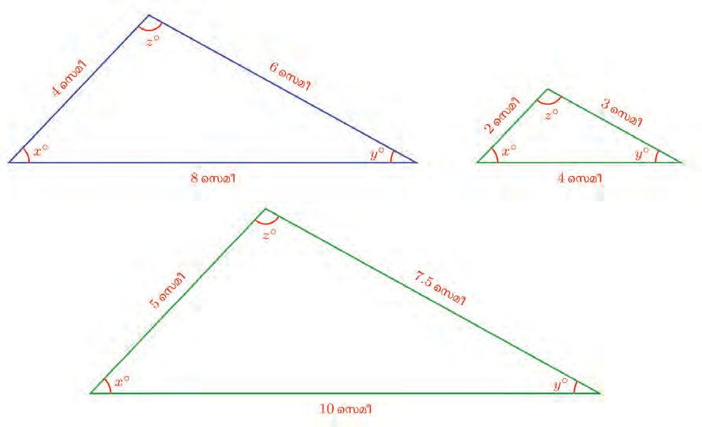
Figure fig_ch06_p110_04 (Page 110)
 Figure fig_ch06_p111_01 (Page 111)
Figure fig_ch06_p111_01 (Page 111)
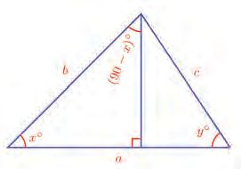
Figure fig_ch06_p111_02 (Page 111)
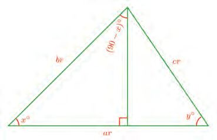
Figure fig_ch06_p111_03 (Page 111)
 Figure fig_ch06_p111_04 (Page 111)
Figure fig_ch06_p111_04 (Page 111)
 Figure fig_ch06_p112_01 (Page 112)
Figure fig_ch06_p112_01 (Page 112)
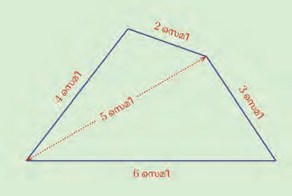
Figure fig_ch06_p112_02 (Page 112)
 Figure fig_ch06_p112_03 (Page 112)
Figure fig_ch06_p112_03 (Page 112)
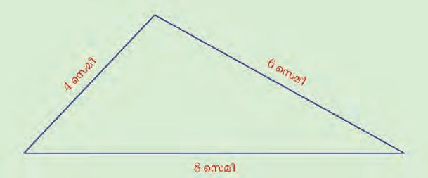
Figure fig_ch06_p112_04 (Page 112)
 Figure fig_ch06_p113_01 (Page 113)
Figure fig_ch06_p113_01 (Page 113)
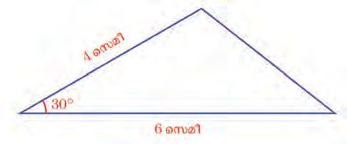
Figure fig_ch06_p113_02 (Page 113)
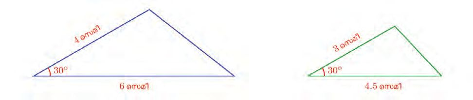
Figure fig_ch06_p113_03 (Page 113)
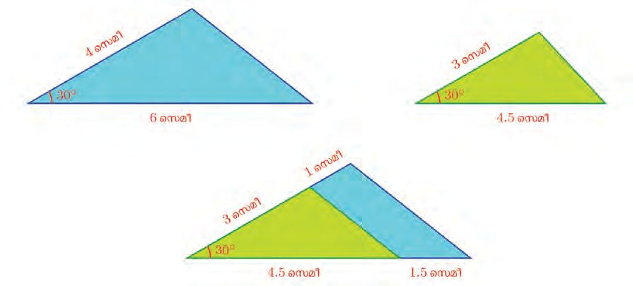
Figure fig_ch06_p113_04 (Page 113)
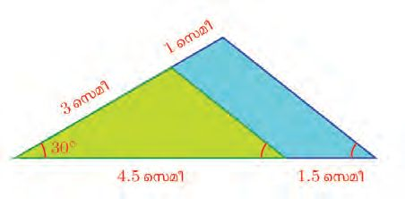
Figure fig_ch06_p113_05 (Page 113)
 Figure fig_ch06_p114_01 (Page 114)
Figure fig_ch06_p114_01 (Page 114)
 Figure fig_ch06_p114_02 (Page 114)
Figure fig_ch06_p114_02 (Page 114)
 Figure fig_ch06_p114_03 (Page 114)
Figure fig_ch06_p114_03 (Page 114)
 Figure fig_ch06_p114_04 (Page 114)
Figure fig_ch06_p114_04 (Page 114)
 Figure fig_ch06_p115_01 (Page 115)
Figure fig_ch06_p115_01 (Page 115)
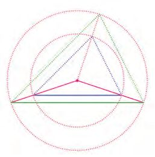
Figure fig_ch06_p115_02 (Page 115)
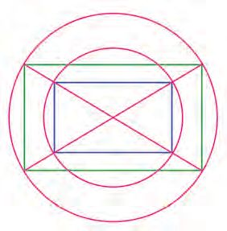
Figure fig_ch06_p115_03 (Page 115)
 Figure fig_ch06_p116_01 (Page 116)
Figure fig_ch06_p116_02 (Page 116)
Figure fig_ch06_p116_01 (Page 116)
Figure fig_ch06_p116_02 (Page 116)
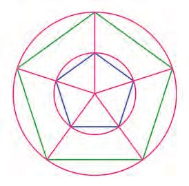
Figure fig_ch06_p116_03 (Page 116)
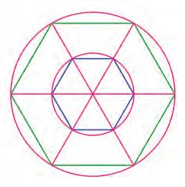
Figure fig_ch06_p116_04 (Page 116)
 Figure fig_ch06_p118_01 (Page 118)
Figure fig_ch06_p118_01 (Page 118)
 Figure fig_ch06_p118_02 (Page 118)
Figure fig_ch06_p118_02 (Page 118)
 Figure fig_ch06_p118_03 (Page 118)
Figure fig_ch06_p118_03 (Page 118)
 Figure fig_ch06_p119_01 (Page 119)
Figure fig_ch06_p119_01 (Page 119)
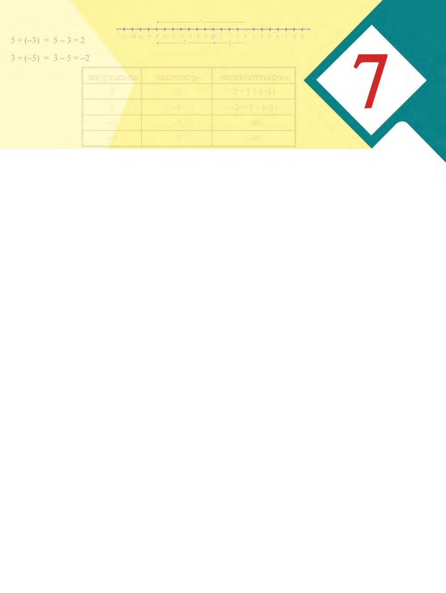
Figure fig_ch06_p119_02 (Page 119)
 Figure fig_ch06_p120_01 (Page 120)
Figure fig_ch06_p120_01 (Page 120)
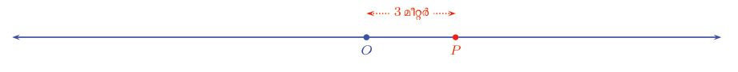
Figure fig_ch06_p120_02 (Page 120)
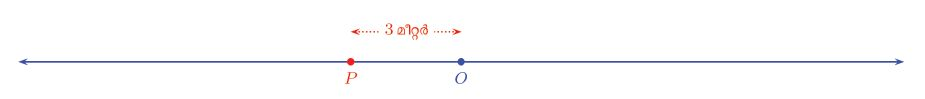
Figure fig_ch06_p120_03 (Page 120)
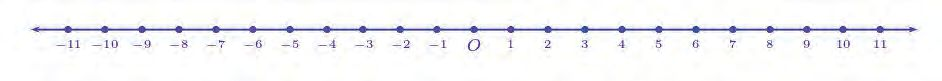
Figure fig_ch06_p120_04 (Page 120)
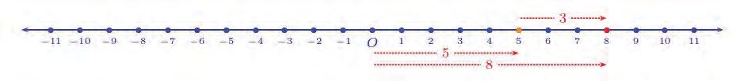
Figure fig_ch06_p120_05 (Page 120)
 Figure fig_ch06_p120_06 (Page 120)
Figure fig_ch06_p120_06 (Page 120)
 Figure fig_ch06_p121_01 (Page 121)
Figure fig_ch06_p121_01 (Page 121)
 Figure fig_ch06_p121_02 (Page 121)
Figure fig_ch06_p121_02 (Page 121)
 Figure fig_ch06_p121_03 (Page 121)
Figure fig_ch06_p121_03 (Page 121)
 Figure fig_ch06_p121_04 (Page 121)
Figure fig_ch06_p121_04 (Page 121)
 Figure fig_ch06_p122_01 (Page 122)
Figure fig_ch06_p122_01 (Page 122)
 Figure fig_ch06_p123_01 (Page 123)
Figure fig_ch06_p123_01 (Page 123)
 Figure fig_ch06_p124_01 (Page 124)
Figure fig_ch06_p124_01 (Page 124)
 Figure fig_ch06_p125_01 (Page 125)
Figure fig_ch06_p125_01 (Page 125)
 Figure fig_ch06_p126_01 (Page 126)
Figure fig_ch06_p126_01 (Page 126)
 Figure fig_ch06_p126_02 (Page 126)
Figure fig_ch06_p126_02 (Page 126)
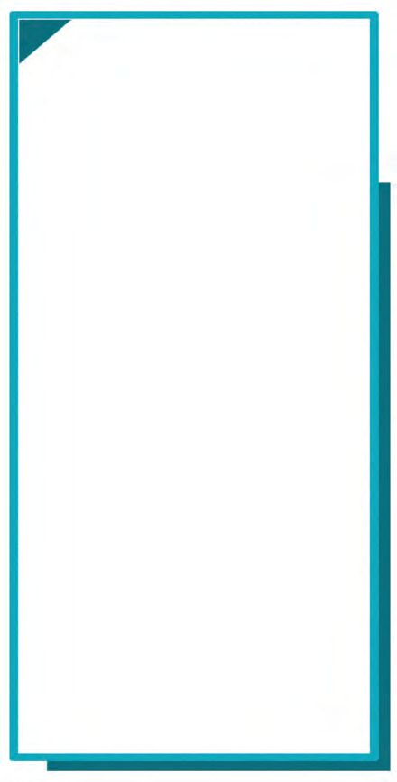
Figure fig_ch06_p126_03 (Page 126)